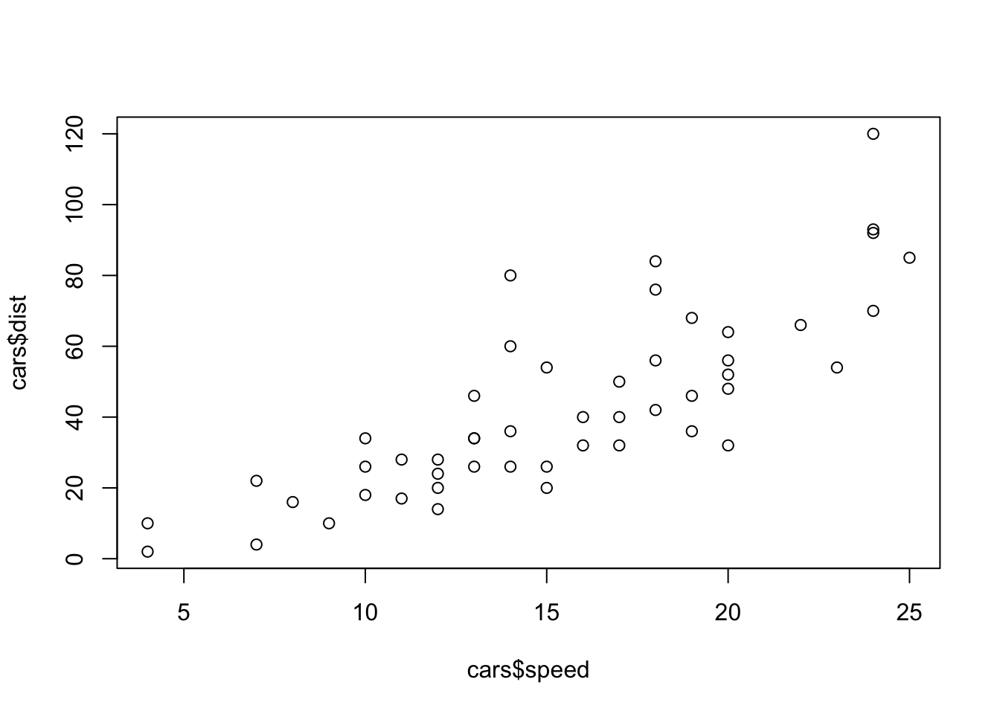

| Sepal.Length | Sepal.Width | Petal.Length | Petal.Width | Species |
|---|---|---|---|---|
| 5.1 | 3.5 | 1.4 | 0.2 | setosa |
| 4.9 | 3.0 | 1.4 | 0.2 | setosa |
| 4.7 | 3.2 | 1.3 | 0.2 | setosa |
| 4.6 | 3.1 | 1.5 | 0.2 | setosa |
| 5.0 | 3.6 | 1.4 | 0.2 | setosa |
| 5.4 | 3.9 | 1.7 | 0.4 | setosa |
Example second stage in a R pipeline
0.1 Quarto
Quarto enables you to weave together content and executable code into a finished document. To learn more about Quarto see https://quarto.org.
If you like to organise you code into several discrete scripts for better organisation, but equally would like a single place that marries all your code together, there’s a couple of relatively solutions Quarto offers.
You can use includes to inset other quarto scripts into a master file like so:
{{< include scripts/01_first-script.qmd >}}Which results in the following:
1 Read in data
Here is some prose. Maybe you’d read in data and do some basic data wrangling here.
Code
plot(cars$speed, cars$dist)
And here is the second script included:
2 Apply QC
Here is some prose. Maybe you’d do some QC here.
Code
plot(iris$Petal.Length, iris$Petal.Width)